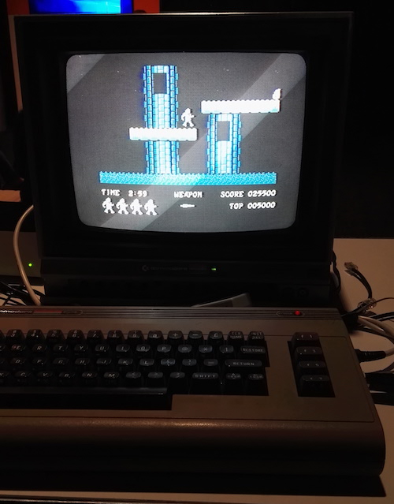
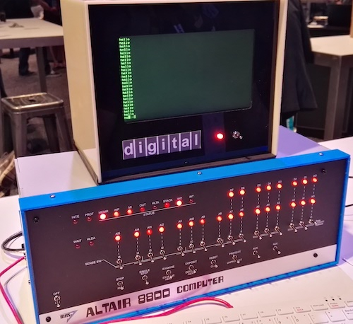
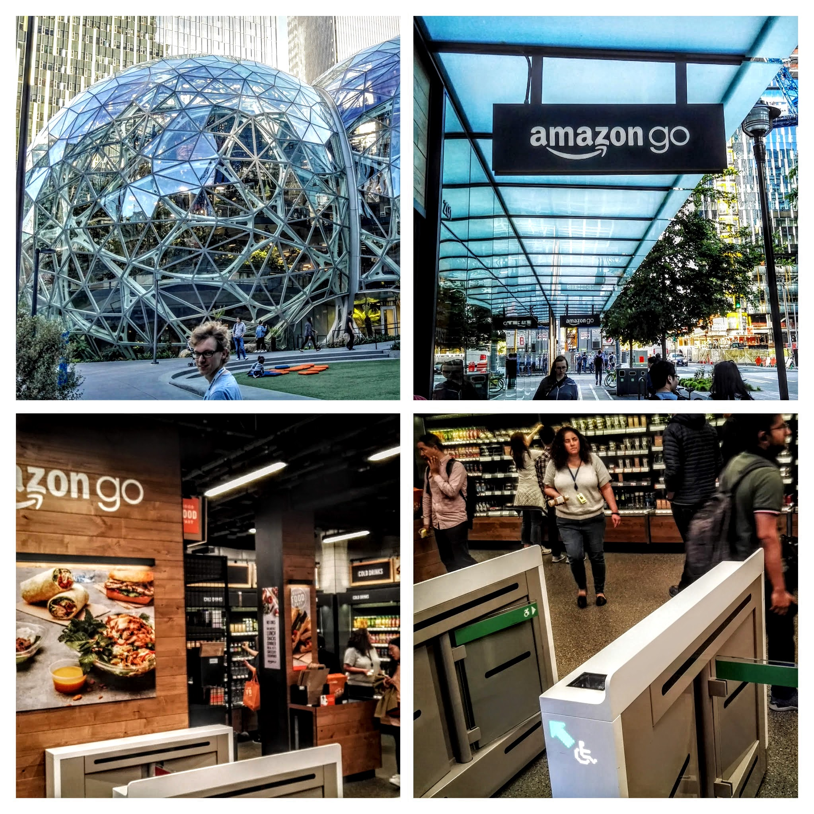

Het is al weer de laatste dag van Build, de jetlag is redelijk onder controle en de tijd is voorbij gevlogen. Als onderwijsprofessionals moesten we natuurlijk de Student Zone verkennen. Ieder uur werden hier nieuwe sessies gehouden voor studenten die met tech aan de slag willen gaan. Je kon bijvoorbeeld de Not Hot Dog App nabouwen.
Als je het uitgebreide filmpje bekijkt, hoor je dat ze het hebben over duizenden foto’s van het internet afhalen om de app accuraat te maken. Met machine learning hoeft dit niet meer, slechts 20 plaatjes van hotdogs is voldoende om met 85% zekerheid te zeggen of iets een hotdog is.
Voor liefhebbers van katten was er de Kittenbot
Wat later op de dag ging men nog een stap verder door honden- en kattenrassen te herkennen, hiervoor werd gebruik gemaakt van de Oxford-IIIT Pet data. Dit is een dataset van ongeveer 200 foto’s per ras. De broncode van de app inclusief instructies om dit zelf op te zetten kan je hier vinden ()
Het ging niet alleen over soft-ware. Studenten kregen ook tutorials over soft skills, zoals personal branding.

Natuurlijk ging het programma voor professionals ook door met sessies over o.a. Flow. Dit is een tool waarmee je meer dan 200 apps aan elkaar kan verbinden. Bijvoorbeeld wanneer een Microsoft Form wordt ingevuld wordt er een seintje gegeven aan Teams die een bericht plaatst of een samenvatting van het ingevulde formulier.
Commodore 64
Zoals het hoort, werd ook de geschiedenis geëerd. Wie herinnert zich niet de iconische Commodore 64?
Pac Man
Voor de jongeren onder ons: voor Poke Mon had je Pac Man - Mmm, zou er een relatie zijn 🤔

Altair 8800
Deze PC was belangrijk voor Bill Gates en Paul Allen. Zij leverden de eerste programmeertaal: Basic. Dit werd het begin van Microsoft.
De tijden dat software alleen op computers draaide is voorbij. Alles is tegenwoordig een device. Je auto, horloge, thermostaat: overal zit een chip in die moet worden aangestuurd via software. Momenteel hebben deze chips te weinig capaciteit om zware berekeningen uit te voeren. Daarom wordt de meeste logica en intelligentie in de Cloud gezet.
Met deze opzet ben je dus van internet afhankelijk om je device te laten functioneren. Voor Industrial Internet of Things (IIoT) is dit een obstakel. Realtime productiedata over een internetverbinding van en naar de Cloud sturen, brengt teveel risico met zich mee (beveiliging, betrouwbaarheid). Daarom werken partijen als Intel en NXP aan microprocessoren die klein en krachtig genoeg zijn om Machine Learning direct op een device uit te kunnen voeren (Edge computing).
Seattle is ook de stad van een aantal iconische brands als Starbucks en Boeing. Tijdens de wandeling terug naar ons appartement liepen we langs het hoofdkantoor van Amazon. We zagen de Amazon Spheres, groene workspaces waar Amazon medewerkers terecht kunnen voor rust en inspiratie. Ook bezochten we de plaatselijke Amazon Go supermarkt waar je legaal proletarisch mag shoppen.
